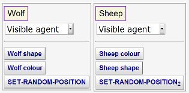
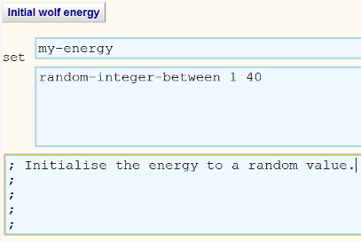
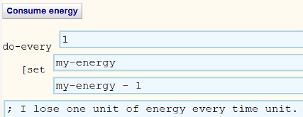

Guide to Modelling Predators-Prey Ecosystems
Here we describe how to build a model of a simple ecosystem consisting of
predators, prey, and plants using the
BehaviourComposer.
This document has links to all the micro-behaviours needed to construct the
model. Additional behaviours are needed for building variants and enhancements.
They can be found in the full library of
micro-behaviours.
Step 1. Create a prototypical predator
- Rename Prototype1 to Wolf (or
your favourite predator). Click on Composer Area
to go to the area containing Prototype1. Rename it by clicking on
the button labelled Prototype1. After doing that return here by
clicking on the Resources Area at the top of
the screen.
- To set the shape of the wolf prototype go to the
SET-SHAPE micro-behaviour. Replace 'fish' with one of the supported shapes (e.g.
'wolf 2' -- note that the space between the 'f' and the '2' is required). Click on the 'SET-SHAPE' micro-behaviour button and from the menu
select Rename. Edit the name to something more informative such as
Wolf shape and click Save. Click on the
renamed behaviour button to Add
it to your prototype.
- Open SET-COLOR
and edit the colour. Rename the behaviour to
something more informative such as Wolf colour.
Add it to your prototype.
- Click on the Run your model tab in the
Composer Area. A new window or tab will
appear. Click on Setup to see your predator.
Step 2. Create a prototypical prey
- Click on New Prototype in the the
Composer Area.
Rename Prototype2 to Sheep (or if you pick a different
name then use that name later in the
Eat a
sheep now
and
Plot sheep
micro-behaviours).
- Repeat step 1.2 with a different shape.
- Repeat step 1.3.
- Run your model in the
Composer Area.
- The location of the prototypes wasn't specified so they both begin in
the centre on top of each other. Add
SET-RANDOM-POSITION to both to fix
this.
- Run your model in the
Composer Area.
You should end up with your Composer Build tab looking something like this:
Step 3. Create an environment
Depending upon the colours and shapes you chose the agents may be hard to
see. Later we will model a renewable resource such as grass but for now just use
SET-BACKGROUND-COLOR to provide a good
background colour. Add it to a
New Prototype and Rename
it 'World', 'Environment', or the like. Change your prototype from Visible agent to
Invisible agent so you don't see its default shape when running your model.
Step 4. Make the predators and prey move
We are planning on having interactions between agents occur when they occupy
the same space. At least one kind of agent needs to move to enable these
interactions. They could move in a goal-directed manner but for simplicity we
will make them all wander randomly.
- Add
WANDER-RANDOMLY-BY-TURNING to
both of your prototypes. With this behaviour they will turn randomly and
move forward a constant amount each time step. (Optionally you can experiment
with other movement behaviours.)
- Run your model in the
Composer Area. Within the simulation
applet you will see a 'switch' labelled
clocked. If you toggle it to off then the applet will
run as fast as possible.
Step 5. Make many predators and prey
We need an initial population of predators and prey.
- Edit the text area above 'How
many instances?' of the predator prototype to a larger number such as 10.
- Repeat for the prey prototype.
- Run your model in the
Composer Area.
Step 6. Model the eating of prey by predators
To model predation we will have each predator eat one of the prey at the
same patch of the environment (if there is one). For simplicity we will have the
predators do this on every tick of the simulated clock. If we think of patches
as fairly large and clock ticks as several days this isn't so unrealistic. We
will model eating as the death of the prey and later will model the acquisition
of energy as the result of eating.
- An
Eat a
sheep now
micro-behaviour has already been made using
INTERACT-WITH-ANOTHER
to
randomly pick a prey at the patch the predator is occupying and if there is
one to add the DIE behaviour to it.
- To cause the predators to repeatedly eat prey click on the
Eat a
sheep now button and select Enhance
followed by Do Repeatedly. It should look
like this:

- Rename Eat a sheep now to
Eat sheep or the like.
- Add your behaviour to
the predator.
Step 7. Model energy collection and consumption
We can model energy by introducing an attribute of each predator that is the
amount of energy it has. Predators lose energy each time step and gain energy when eating some prey.
We will start the model with the energy of predators uniformly distributed.
- Customise and rename
UPDATE-ATTRIBUTE so that the first text boxes defines an attribute named 'my-energy'. (The
BehaviourComposer automates the task of declaring attributes if their name
begins with "my-".) To give predators different
amounts of initial energy the initial value can be an expression such as
random-integer-between 1 40.
The behaviour should look something like this:

-
Add it to the predator prototype.
- Next we'll define a behaviour that will model the constant decrease in energy.
Customise and rename
UPDATE-ATTRIBUTE-REPEATEDLY
so that my-energy is set to my-energy - 1. (Note that NetLogo
requires spaces on both sides of the minus sign.) Add it to the predator
prototype. It should look like this:

- Customise and rename
UPDATE-ATTRIBUTE again. Specify that my-energy is set to
my-energy + 20. Add this micro-behaviour to the
My Additional Behaviours list in the
Eat
sheep behaviour.
-
Die when no energy was created by customising
WHENEVER. Add it to
the predator prototype.
- Run your model in the
Composer Area. Can any predators survive?
Can any prey?
Step 8. Draw population graphs as the model unfolds
- First to create an empty graph we add to
Empty populations plot to a
new prototype
renamed to Observer or the like. Check
the box labelled Hide this agent so you don't see its default shape when running your model.
- Add
Plot wolves and
Plot sheep to the Observer prototype.
- Run your model in the
Composer Area.
Step 9. Model predator reproduction
A very simple way to model reproduction is that each individual reproduces
with some odds on each time step. For many purposes of studying predators and
prey there is no need to model gender, sexual maturity, and sexual encounters.
- Open ADD-COPIES
and change the 9 to 1. Rename the behaviour to
something like Add a wolf.
- We will
split the energy between the parent and offspring. To do so
customise and rename
UPDATE-ATTRIBUTE again (Split energy
is a good name). Specify that my-energy is set to my-energy / 2 (note that NetLogo requires spaces on both sides of the /).
- Open
ADD-BEHAVIOURS and rename it to Wolf reproduction or the like.
- Add the Add a wolf behaviour to the
Behaviours list on
the Wolf reproduction behaviour.
- Add the Split energy behaviour
to the Behaviours list on
Wolf reproduction. It is important the energy is halved before
the agent is copied so that the copy also gets half the energy so be sure
that the Split energy is above Add a wolf.
- Click on the Wolf reproduction button and select
Enhance followed by Do
with Probability.
- Edit the probability field to a small value (0.02 for example to model a
2% chance of reproducing on each turn).
- Click on the Wolf reproduction button and select
Enhance followed by Do
Repeatedly so this behaviour happens on every simulation cycle.
- Add Wolf reproduction to the predator prototype.
- Run your model in the
Composer Area.
Step 10. Model prey reproduction
Do the same as step 9 possibly with a different probability or parameter. You
can reuse the behaviour for splitting the energy.
Step 11. Model vegetation
We can introduce plants that the prey eats. After being eaten plants
replenish themselves after a delay.
- Create a new prototype called Grass and
add
Make grass to it. This creates one grass agent for each patch of the
world.
- Because grass doesn't move we will display it by setting the colour of
the underlying patch. Add
Grass is zero size to the prototype.
Move it before the Make grass
behaviour so that all grass agents have zero size.
- To spread the grass out one per patch add
Layout grass to the Environment prototype.
(If you were to add this to the Grass prototype then this would be run
hundreds of times -- once for each grass agent.)
- Add
Eat grass to your prey prototype.
This repeatedly eats any green grass
that is in the same patch as the prey. Eating entails gaining energy,
setting the grass brown, and scheduling its recovery.
- Add a variant of the Initial wolf energy behaviour and the Consume energy behaviour created in Step 7.
- Add
Die when no energy
to the prey prototype.
- Add
Plot grass to the Observer prototype to graph the amount of green
grass (divided by 4 to have comparable scales).
- Run your model in the
Composer Area. Compare the fluctuations
of the predator and prey with and without plants.
Step 12. Help us improve this
Please fill in this
short questionnaire.
This guide was inspired by the
NetLogo Wolf Sheep Predation model. It runs significantly faster than the
model constructed here. You may wish to experiment with it.
Here is a
sample predator-prey model that adds sliders for several of the parameters of this model
for easy experimentation.